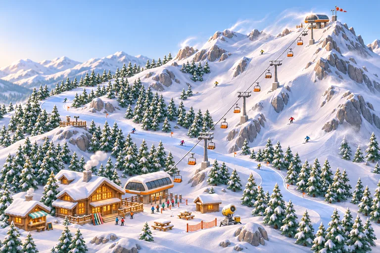

Un jeu de construction pour iPhone et iPad
Une petite montagne. Mille possibilités.
Dessinez des pistes et des remontées, puis regardez de minuscules skieurs faire la queue, enchaîner les virages et suivre la neige fraîche. Un seul prix. Sans publicité. Sans achat intégré.
Un seul prix, sans publicité, sans achat intégré, sans compte. Fonctionne entièrement hors ligne. iOS 18 ou version ultérieure.


Comment on joue
Dessinez des pistes. Regardez-les skier.
Un geste, et la montagne s'anime. Vous tracez les descentes et les remontées ; les skieurs, la météo et les files répondent d'eux-mêmes.
-
Un
Dessiner des pistes
Faites glisser un doigt vers le bas, à même le relief. Le relief fixe la pente : en travers d'une face raide, la descente s'adoucit ; tout droit dans la pente, elle passe en noire.
-
Deux
Faire tourner les remontées
Les pistes font descendre les skieurs, les remontées les font remonter, et c'est là que naissent les files. Commencez par un téléski, montez des télésièges le long des crêtes, puis envoyez une télécabine au sommet.
-
Trois
Regardez-les skier
Débutants, familles, promeneurs, experts et aventuriers choisissent chacun les descentes qui leur conviennent, font la queue, suivent la neige fraîche et rentrent quand la fatigue vient. Quand quelque chose coince, le jeu nomme l'endroit.
Le relief décide
Chaque descente affiche sa difficulté.
Les descentes sont marquées par la forme autant que par la couleur, pour rester lisibles d'un coup d'œil, y compris sans perception des couleurs. Les plus raides portent un double losange.
- Cercle vertDébutant
- Carré bleuIntermédiaire
- Losange noirDifficile
Snowline utilise le balisage nord-américain (cercle, carré, losange) et non les pistes vertes, bleues, rouges et noires des stations françaises.
Dans le jeu
La montagne de près.

Dessiner une station. 
Tout coince aux remontées. 
De petits bâtiments, de grands effets. 
La météo change tout.
Le Parcours
Cinq montagnes, chacune avec son caractère.
Chaque montagne est un court scénario de quatre à six journées, avec trois médailles.
Ces images sont les illustrations de chapitre qui apparaissent au choix de la montagne. Ce ne sont pas des captures du jeu ; celles-ci sont plus haut.
-

Chapitre 1 · Les bases
Alpine Dawn
Des pentes ouvertes au-dessus d'un petit village. Vos premières pistes, votre première remontée et vos premiers skieurs.
-
Chapitre 2 · Les files
Pine Valley
Une vallée boisée où les remontées convergent vers une gare de départ très fréquentée. Gardez les files en mouvement.
-

Chapitre 3 · La neige
Glacier Basin
Un cirque glaciaire au-dessus d'une combe ensoleillée. Faites durer la neige.
-

Chapitre 4 · Le vent
High Ridge
Une crête exposée au-dessus de descentes abritées. Comptez avec les jours où le vent arrête les remontées d'altitude.
-

Chapitre 5 · Tout à la fois
Three Peaks
Trois sommets partagent un village. Les files, la neige et le vent, tout à la fois.
La montagne est l'interface
Un petit monde. De vraies décisions.
Aucun tableau ni menu à gérer. Touchez une remontée ou une descente pour voir pourquoi ça sature et comment y remédier.
Des skieurs qui décident eux-mêmes
Débutants, familles et experts choisissent leur route selon leur niveau, l'attente et les conditions.
Les remontées sont le goulot d'étranglement
Les files naissent d'une affluence réelle et d'un débit réel. Améliorez un télésiège saturé et voyez où l'affluence se déplace ensuite.
Des prévisions sur lesquelles compter
Le bulletin annonce la tempête, le vent et le radoucissement avant leur arrivée. La neige fraîche attire les experts ; le vent peut arrêter les remontées exposées.
La neige s'épuise
La neige s'amincit sur les bas de pente ensoleillés, tandis que les combes hautes gardent la leur. Tout dépend de l'endroit où vous construisez.
Une décision chaque matin
Avant l'ouverture des remontées, vous choisissez la priorité du jour. Les équipes s'occupent du reste.
Annuler, pause, accéléré
Annulez et rétablissez chaque changement, mettez en pause à tout moment et accélérez quand la station tourne.
Six équipements
Six manières de façonner la journée.
Chacun change où vont les skieurs, combien de temps tient la neige, ou la sécurité de la montagne.
- SnowparkAttire les skieurs de freestyle sur les descentes alentour.
- Remontée à fort débitFait monter plus de skieurs. Surveillez les descentes qu'elle alimente.
- Abri chaufféUn endroit où les skieurs fatigués se reposent et se réchauffent.
- Centre de damageMaintient les descentes proches en bon état d'un jour à l'autre.
- Poste de secoursAide à garder son coin de montagne ouvert quand le temps tourne.
- Neige de cultureProtège la neige à sa portée les jours froids.
Trois façons de jouer
Décrocher des médailles, construire tranquillement ou tenter le sommet du jour.
-
Commencez ici
Parcours
Cinq montagnes, trois médailles chacune. Alpine Dawn enseigne les bases, Pine Valley met vos files à l'épreuve, Glacier Basin votre neige, High Ridge le vent, et Three Peaks tout à la fois. Voir les montagnes
-
Zen
Construire à votre rythme, sans pouvoir échouer.
-
Sommet du jour
Une nouvelle montagne chaque jour, la même pour tout le monde.
Agréable à jouer
Pensé pour tout le monde en montagne.
Accessibilité et confort
- La difficulté jamais par la couleur seule : cercle, carré, losange
- Respecte « Réduire les animations »
- Grandes zones tactiles, 44 points au minimum
- Vitesse de jeu réglable, pause à tout moment
- Fonctionne entièrement hors ligne
- iPhone en paysage et iPad
Un seul prix. Rien d'autre.
Snowline est un jeu premium. Vous payez une fois, et c'est tout.
- Sans publicité
- Sans achat intégré
- Sans compte ni suivi
- Vos stations restent sur l'appareil
Lire la politique de confidentialité (English)
Votre montagne vous attend.
Snowline est un jeu de construction de station de ski pour iPhone et iPad. Un seul prix. Sans publicité. Sans achat intégré.